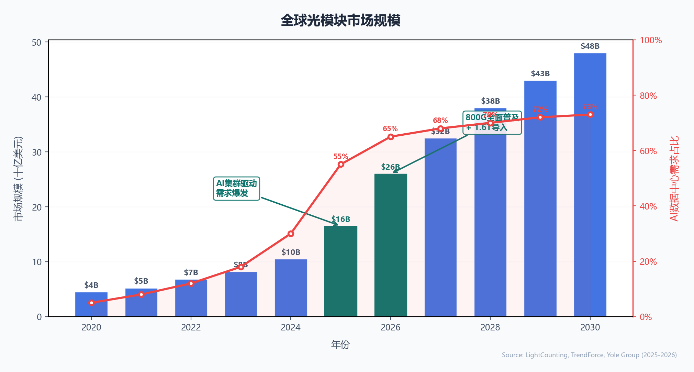
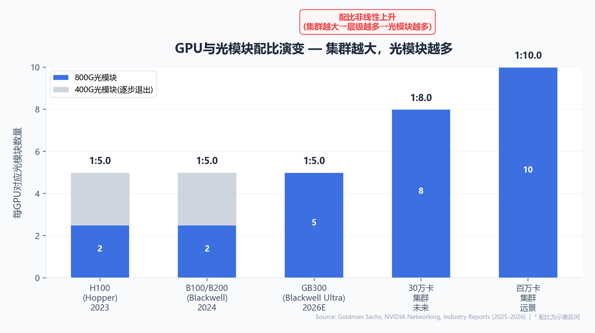
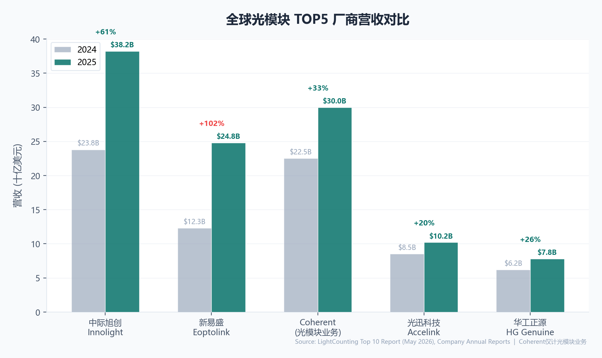
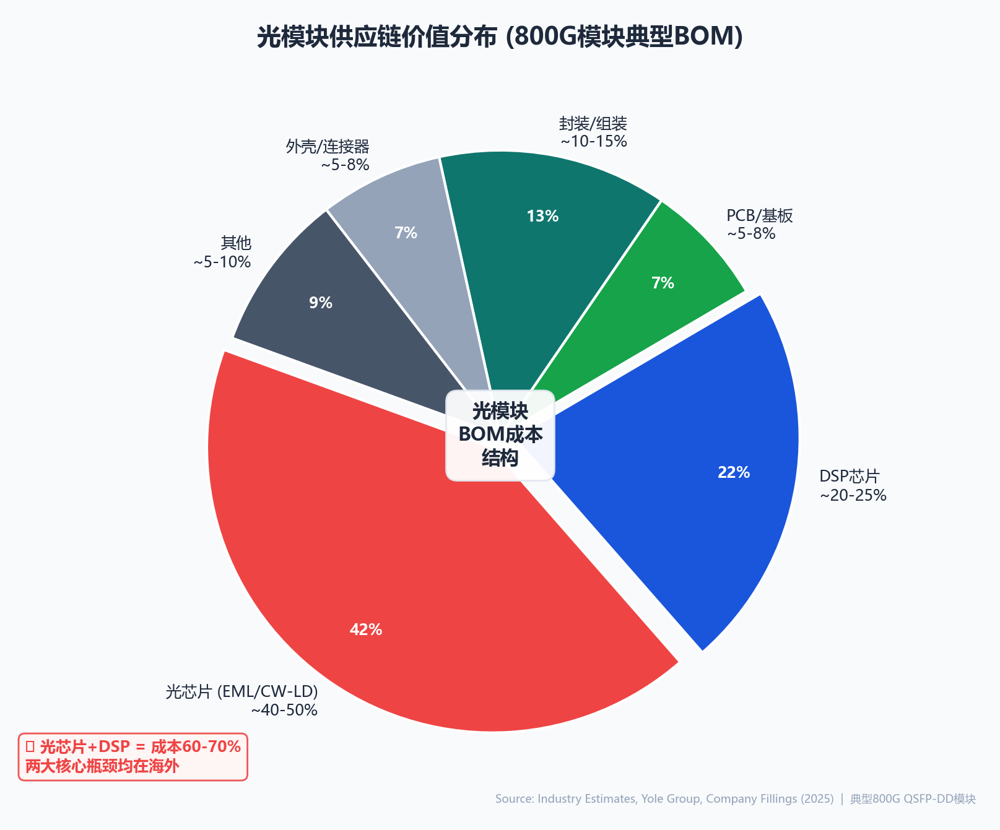
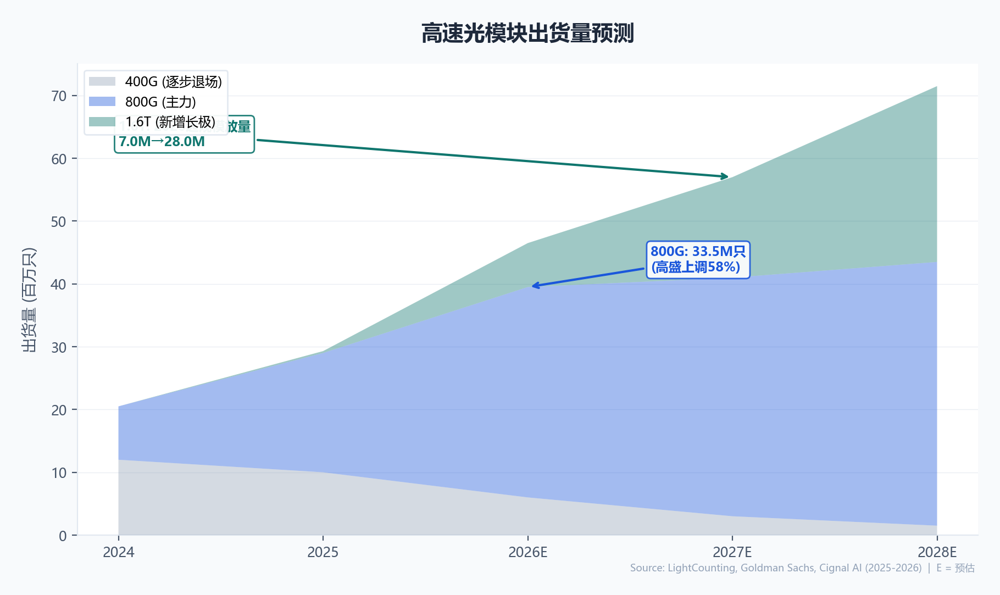

1 为什么现在要谈光模块
市场规模两年内从165亿冲向260亿美元，AI需求占比从30%飙升至65%——这不是周期，是结构性跃迁
2026年，一个拇指大小的金属盒子正在成为AI数据中心里最抢手的物资。它既不像GPU那样被万众瞩目，也不像HBM那样被称为"AI的血液"。但当它缺货的时候，千卡GPU集群的训练效率会骤降30%。它就是光模块——把电信号变成激光、射入光纤、跨机架互联的那个小盒子。
要理解光模块为什么突然变得如此重要，需要先理解一个基础事实：大模型训练不是在一颗GPU上完成的，而是在成千上万颗GPU上协同完成的。GPT-4级别的模型训练需要数万张GPU同时工作数周。这些GPU分布在成百上千个机架上，彼此之间需要交换海量数据——每张GPU每秒向其他GPU发送数百GB的梯度、激活值和参数更新。而这些数据离开GPU所在的服务器的第一站，就是光模块。

上面的数据图揭示了一个关键拐点：2025年之前，光模块市场的增长主要由数据中心从100G向400G的常规代际升级驱动，年增速在15-25%区间波动。但从2025年开始，AI算力集群的大规模建设使得需求增长进入了一个完全不同的量级——2025年市场规模同比暴增57%，AI相关需求首次超过整体市场的一半。这不是"升级"，是"扩建"——每个新AI集群都需要全新的光模块，而不是替换旧的。
打个比方：传统数据中心升级光模块就像给旧房子换新窗户，而AI集群建设就像新建一座城市——前者需求量有限，后者需要所有建材从零开始。而且更关键的是，AI集群越大，需要的"街道和桥梁"（光模块）就以更快的速度增长——这就是我们后面要详细讨论的"超线性配比"问题。
光模块已从"网络配件"升级为AI基础设施的战略物资。当前行业面临的是需求端结构性爆发叠加供给端核心芯片不足的双重矛盾——谁能解决EML激光器和DSP的供应瓶颈，谁就掌握了未来三年的增长密码。这不是短期补库驱动的小周期，而是AI算力基础设施建设催生的产业超级周期。
2 光模块里到底装了什么
一枚拇指大小的金属盒子，内藏九层精密组件——DSP是大脑，TOSA/ROSA是心脏，EML激光器是灵魂
如果把一枚800G光模块放在电子显微镜下拆解，你会看到一套精密程度不亚于智能手机主板的微型系统。从外壳到光接口，从PCB到DSP，每一层都对应着一道物理工序，每个组件都关系着信号能否以每秒800亿比特的速度准确传输。
在理解这些组件之前，先想象一个类比：如果你要跨海传送一封信，你需要把信（数据）装进一个瓶子（光模块），用激光笔（激光器）照亮它，让它沿着海底光缆（光纤）传播，到对岸后再用一个探测器（光电探测器）读出内容，然后交给翻译（DSP）纠错还原。整个过程中任何一个环节出现噪声，最终收信的人都可能读错内容。
DSP：光模块的大脑
数字信号处理器（DSP）是光模块中最复杂、最昂贵的芯片，单颗成本200-500美元，占模块总成本的20-25%。它的功能类似于一个"实时翻译+纠错引擎"——接收经过长距离光纤传输后已经畸变的信号，运用复杂的数学算法（包括PAM4解调、前向纠错FEC、时钟恢复）将模糊的波形还原为干净的0101比特流。博通（Broadcom）和Marvell两家垄断了全球DSP市场，目前没有第三家有竞争力的量产方案。这也是中国光模块产业链最深的痛点——外壳是自己造的，大脑是买的。
TOSA/ROSA：电光转换的心脏
TOSA（发射光组件）和ROSA（接收光组件）合称"光模块的心脏"。TOSA内部的核心是一颗EML（电吸收调制激光器）——一种可以将电信号直接"刻"到激光上的高精度器件。ROSA内部的核心是光电探测器（PIN或APD），负责把接收到的微弱光信号转回电信号。一台光模块的传输距离、信号质量和功耗表现，核心取决于这两个组件的性能——如果说DSP决定了光模块的"智商"，TOSA/ROSA就决定了光模块的"体力"。
值得注意的一个细节是：在800G QSFP-DD光模块不到3立方厘米的封装空间内，这些组件必须被精确定位到微米级精度。激光器和光纤之间的对准误差如果超过1微米（约为头发丝直径的百分之一），就会导致严重的光功率损失。这解释了为什么光模块制造不是简单的"组装活"——它需要高端精密光学对准设备，进入壁垒远比直观感受高得多。
一枚800G光模块内含的激光器以每秒800亿次的频率闪烁（调制），相当于在一秒钟内把一部4K电影的所有比特翻转8000次。这需要光源的稳定性、调制器的线性度和探测器的灵敏度同时达到极高的物理极限——这也解释了为什么光模块的高端化进程主要由物理定律驱动，而非商业模式创新。
3 电信号是怎样变成光的
从0101方波到激光脉冲再到信号还原——这不仅是物理魔术，更是一道不可绕过的物理约束
计算机内部一切都是电：CPU和GPU以电压高低表示0和1，在铜导线中奔跑。但电有一个麻烦：它跑不远。高频信号（25GHz以上，对应25Gbps单通道速率）在铜线中传输距离超过几米就会严重衰减——趋肤效应导致电流只走导线表面，电阻增大；介质损耗把信号能量转化为热量；串扰使得相邻导线互相干扰。距离越远，误码率越高。
这就是为什么数据要"出机房"的时候，必须把电变成光。光在光纤中传输的损耗仅为0.2 dB/km——这意味着一束激光跑1公里后还能保留约95.5%的能量。相比之下，同样的高频电信号在等长铜线中可能已经衰减到无法识别。而且光不受电磁干扰——你不会担心隔壁机柜的电源线干扰你的光纤。
五个步骤，每步一个物理元件
Step 1: 调制 —— "把数据刻进激光"
激光器发出一束稳定的连续光。调制器接收电信号（0101方波），根据电压高低改变光的强度（或相位）。当电信号为"1"时，光脉冲强（亮）；为"0"时，光脉冲弱（暗）。本质上，这是把电的节奏"抄"到了光的节奏上。EML（电吸收调制激光器）是目前最主流的高速调制方案，它将激光器和调制器集成在同一芯片上，体积小、功耗相对可控。
Step 2: 传输 —— "光纤就是高速公路"
调制后的光脉冲通过光纤传输。光纤的核心是石英玻璃拉成的细丝（直径约9微米，相当于头发丝的十分之一）。光脉冲在光纤中利用全内反射原理前进——就像在镜面隧道中不断弹射。单模光纤（G.652标准）的衰减约为0.2 dB/km @ 1550nm波长，这是光学通信的"黄金窗口"。相比之下，同等速率的铜线在5-7米后就需要中继放大器。
Step 3: 探测 —— "从光中抓回数据"
到达接收端后，光电探测器（PIN光电二极管或APD雪崩光电二极管）将光信号转回电信号。探测器的工作原理是光电效应：光子撞击半导体材料中的电子，使其跃迁到导带，产生电流。光越强，电流越大——这就把光的明暗重新翻译成了电的高低。但经过数十公里传输后，信号已经出现了噪声和抖动。
Steps 4-5: 放大 + DSP还原
探测器输出的电流极其微弱（微安级别），需要跨阻放大器（TIA）将其放大为可用的电压信号。然后DSP出场——它对失真信号进行PAM4解调（800G=8通道×100Gbps PAM4）、时钟数据恢复（CDR）、前向纠错（FEC）等一系列数学处理，最终输出干净的0101比特流。没有DSP，接收端看到的就是一团噪声，就像没有解码器的数字电视只能看到雪花。
把电光转换想象成"写信寄信"：数据是信的内容（0101），激光器是笔，调制器是写字的手（把字写到光上），光纤是邮路（几乎无损地传递），探测器是收信人的眼睛（看到信），DSP是翻译（把潦草的字迹还原成清晰文本）。整个链路中任何一环出错，收信人就可能读错信息——这在AI训练中意味着梯度计算错误，导致模型收敛失败。
4 AI算力需要多少光模块
GPU与光模块的配比从H100时代的1:2.5到GB300的1:5再到30万卡集群的1:10——集群越大，配比越高，呈超线性增长
这是整个光模块行业最核心的驱动力——GPU数量与光模块需求之间的关系。这个关系如果用一个公式来表达：光模块数 ≈ GPU数 × 每GPU带宽 × 网络层数 ÷ 每模块带宽。三个乘数项中，"网络层数"随GPU总数量增长而增长——这就是所谓的"超线性"。
为什么网络层数会随GPU数量增长？这里涉及数据中心网络的架构原理。想象你在组织一个5000人的会议，想让每个人都能随时和任何其他人交谈。如果只有一层交换机，每个交换机能连接64个人，你需要约80台交换机和一定数量的线缆。现在扩展为5万人的大会场：你不能仅仅把交换机数量翻10倍，因为你还需要第二层交换机来连接第一层的所有交换机。扩展到50万人的体育场规模，你就需要第三层。每增加一层，就需要额外一组光模块来互联交换机——这就是"层数效应"。

从1:2.5到1:5：一次被低估的翻倍
在H100时代（2023-2024），每张GPU大约需要2-2.5个800G光模块。这是因为Hopper架构的对外网络带宽有限，且当时很多集群仍使用400G光模块。到了Blackwell（B200/B300）时代，情况发生了根本变化：
| GPU代际 | 典型年份 | 单GPU光模块配比 | 800G占比 | 关键变化 |
|---|---|---|---|---|
| H100 (Hopper) | 2023-2024 | 1 : 2.0 ~ 2.5 | ~60% | CX7 400G网卡为主，Fat-Tree两层 |
| B100/B200 (Blackwell) | 2024-2025 | 1 : 5.0（其中2.5个400G+2.5个800G） | ~50% | CX7限制，混用400G/800G |
| B300/GB300 (Blackwell Ultra) | 2026E | 1 : 5.0（纯800G） | 100% | CX8全800G网卡，400G退出AI训练 |
| 30万+卡训练集群 | 2026-2027E | 1 : 8 ~ 10 | 100% | 四层/五层交换机拓扑，配比非线性上升 |
B300/GB300是关键转折点。它全面标配CX8 800G网卡，不再混用400G。这意味着每块GPU对外的每一根网络连接都必须使用800G光模块。从B200到B300，配比从"1:5（混合400/800）"变成"1:5（纯800G）"，虽然数字没变，但800G的实际需求量翻了一倍。
用一个实际数字来感受规模：一个30万张GB300组成的训练集群，按1:8的保守配比计算，需要240万个800G光模块。以每只800G光模块约400-600美元的均价计算，仅光模块一项的采购额就达10-14亿美元。而NVIDIA一家公司2025年交付的GPU就超过300万张——这意味着仅NVIDIA生态一年的光模块总需求就可能超过50亿美元。加上Google TPU、Amazon Trainium、微软Maia等自研ASIC的配套需求，市场的真实规模可能更大。
2026年是光模块行业的关键窗口期。GB300的量产时间、1.6T的导入节奏、EML激光器产能扩张进度——这三个变量决定了2026年全年光模块行业是供不应求还是供过于求。当前多数机构判断供给缺口在15-25%之间。
5 全球竞争格局
中国7家闯入全球TOP10，中际旭创和新易盛形成双寡头——但核心芯片的主导权仍在美国和日本手中
LightCounting于2026年5月发布的最新全球光模块供应商TOP10榜单是本行业最权威的排名。榜单显示了一个清晰的结构：中国厂商占据7席，总份额达63.2%；中际旭创以53.33亿美元收入霸榜第一，新易盛以189%的惊人增速从第四跃升至第二，超越美国Coherent。

这张图需要带着一个重要的"但书"来读：中游称王 ≠ 全产业链称王。光模块的成本结构中，光芯片（EML/CW-LD激光器）占40-50%，DSP芯片占20-25%，两项合计60-70%——而这两个环节的主导权几乎完全不在中国大陆手中。

供应链的真实格局
光模块的成本大头在芯片：光芯片（EML激光器、CW-LD、探测器）+ DSP合计占60-70%。这些都是尖端半导体工艺的产物，技术壁垒极高。
中国企业在中游封装制造环节拥有压倒性份额（63.2%），规模优势和成本控制能力是核心竞争力。但在上游核心芯片环节，博通/Marvell（DSP）、住友电工/Lumentum（EML）仍然掌握着关键供应。
"外壳是自己造的，心脏是买的"——这个格局短期内难以改变。
2025年全球光模块TOP10：中国企业的结构性优势
| 排名 | 厂商 | 国家 | 2025年光模块收入 | 同比增速 |
|---|---|---|---|---|
| 1 | 中际旭创 (Innolight) | 中国 | 53.33亿美元 (382.40亿元) | +61% |
| 2 | 新易盛 (Eoptolink) | 中国 | 35亿美元 (248.42亿元) | +189% |
| 3 | Coherent | 美国 | ~30亿美元 (光模块业务) | 中单位数增长 |
| 4 | 光迅科技 (Accelink) | 中国 | 未单独披露 | — |
| 5-10 | Lumentum (美) · 纳真科技/海信宽带 · 华工正源 · 索尔思光电 · 剑桥科技 (中) | |||
中国优势的本质：制造规模 + 成本控制
中国光模块厂商的核心竞争力来自两个因素。第一是规模效应——中际旭创2025年出货量达2,109万只（+44.6%），全球没有第二个厂商接近这个量级。第二是产业链集群——从PCB板到金属外壳到封装设备，珠三角和长三角形成了完整的光模块产业生态。这种生态集群带来的成本优势是新进入者无法在3-5年内复制的。
但核心芯片仍被卡脖子
EML激光器的全球供应高度集中于日本住友电工，DSP则由美国博通和Marvell双寡头垄断。中国厂商在25G以下光芯片已有突破，但50G以上EML仍主要依赖进口。工信部要求2026年国内智算中心光通信产品国产化率≥70%，但这更多影响中低端产品，高端模块的芯片自主化仍需3-5年。
6 市场与周期
800G全面普及 + 1.6T规模商用 = 双引擎驱动——但本轮景气与历史上的"缺货涨价"有本质区别
光模块行业并不是第一次经历景气周期。2017-2018年，全球数据中心从40G大规模升级到100G，光模块出货量暴增。但2019年升级完成后需求骤降，价格暴跌，行业进入调整期。那么，这一轮AI驱动的超级周期会不会也以类似的方式结束？

本轮 vs 2017-2018：三个根本不同
1. 不是替换，是增量
2018年的景气本质是存量替换——100G换掉40G。数据中心数量没有大幅增加，只是升级了已有的东西。本轮是增量创造——AI算力集群本身就是新需求，每个新建的GB300集群从零开始采购光模块。这就像"装修旧房子"和"建新城市"的区别——前者只需要几桶漆，后者需要整座城市的基础设施。
2. 供需节奏的错配
EML激光器和DSP芯片的产能扩张周期长达18-24个月（从投资建厂到量产），而AI集群的建设周期仅6-12个月。这种"慢供给、快需求"的节奏错配意味着即使今天开始大量投资光芯片产能，新产能也要到2027-2028年才能释放——在此之前，短缺将持续。Yole Group已明确指出"激光光源已成为上游重大瓶颈"。
3. 需求驱动力不同
2018年的驱动力是云计算厂商的周期性资本支出——一种高度跟随宏观经济和企业IT预算波动的需求。本轮的核心驱动力是AI模型训练——一种由技术军备竞赛驱动的、对宏观经济波动相对不敏感的需求。只要前沿模型还在通过增加参数和数据量来获取性能提升，对更大规模训练集群的需求就不会停止。
风险：GPU产能过剩传导
最大的风险不在光模块行业内部，而在下游。如果AI应用落地进度不及预期，或前沿模型性能增长遇到瓶颈，GPU需求可能骤降——光模块需求将随之骤降。这就是这个行业的本质：它不直接面对终端用户，而是依赖GPU和云计算厂商的资本支出。它能飞多高取决于AI的投资回报率能走多远。
7 关键公司深度档案
从全球双寡头到国产追赶者——基于最新年报的客观能力画像
以下分析基于各公司最新的公开年报（2025年度及2026Q1）和市场研究数据，以客观呈现产业现状为目的。
中际旭创 (Innolight) — 全球光模块龙头
深交所: 300308 · 苏州 · 全球第1中际旭创是全球唯一一家800G光模块出货量突破2,000万只的厂商。其核心竞争力来自三个维度：第一，客户卡位。深度绑定Google、Amazon、Meta、Microsoft四大北美云厂商，海外收入占比高达85%。在AI光模块领域，旭创是英伟达1.6T光模块的第一批量产供应商。第二，规模壁垒。2025年出货2,109万只，规模带来的成本优势令追赶者望尘莫及。第三，技术代差。1.6T量产领先行业至少12个月，LPO（线性驱动可插拔光学）方案已在客户侧完成验证。但需要关注的风险包括：汇兑损益（85%收入以美元计价）、客户集中度（前五大客户占比超60%）、以及EML/DSP供应的外部依赖。
新易盛 (Eoptolink) — 增速最猛的挑战者
深交所: 300502 · 成都 · 全球第2新易盛是2025年全球光模块行业增长最快的公司，收入从2024年的约86亿元飙升至2025年的248.42亿元，一年之内翻了三倍——从全球第四跃居第二，超越Coherent。其成长路径独具特色：以亚马逊为核心客户起家（400G/800G模块的主要供应商），随后通过英伟达认证进入AI算力核心供应链。2025年，新易盛在LPO（线性驱动可插拔光学）和800G单波100G两大技术路线上取得突破，收入预期LPO占比2026年将达15%。但相比中际旭创，新易盛在1.6T上的量产进度稍慢，客户集中度风险更高（亚马逊一家贡献超过一半营收），且研发费用率低于旭创，长期技术储备可能不及第一梯队。
Coherent — 全产业链的美国巨头
NYSE: COHR · 宾夕法尼亚 · 全球第3Coherent的特殊之处在于它不是一个"纯"光模块公司——它从磷化铟（InP）衬底、EML激光器晶圆、到光模块封装全产业链布局，是全球极少数能从沙子做到光模块的企业。其光模块业务（约30亿美元）虽然被中际旭创和新易盛超越，但在上游光芯片和材料环节的优势仍然牢固。Coherent的战略思路与中旭不同：它不追求出货量第一，而是锁定高毛利的国防、工业和高端通信市场。对于担心供应链安全的光模块客户来说，Coherent的垂直整合是一个独特的卖点。
光迅科技 (Accelink)
深交所: 002281 · 武汉 · 全球第4光迅科技是华为昇腾（Ascend）AI芯片集群的核心光模块供应商，2025年向华为交付OCS（光电路交换）模块超过2,000片。作为中国信科集团旗下企业，光迅具有从光芯片到子系统的全链条布局，是"国产替代"政策的主要受益方之一。工信部要求2026年国内智算中心光通信产品国产化率≥70%，光迅是执行这一政策的关键载体。但与旭创、新易盛相比，其海外AI客户占比低，业绩对国内政策节奏更敏感。
华工正源 (HG Genuine)
深圳: 000988 · 武汉 · 全球TOP10华工正源是华工科技旗下光通信子公司，2025年联接业务营收60.97亿元。其最突出的能力是光芯片自研——25G和50G EML激光器已实现自研量产，光芯片自给率达80-90%，这在全行业缺芯的背景下是巨大的战略优势。华工正源目前在泰国设有制造基地以规避潜在贸易风险，产能持续释放。其弱点是北美头部AI客户渗透不足，主要服务华为和国内数据中心市场——华为昇腾份额决定了华工正源的上限。
注：以上公司信息基于各企业2025年度报告、2026年Q1季报、LightCounting全球光模块供应商TOP10报告（2026年5月发布）及公开市场数据整理，以客观呈现产业现状为目的，不构成任何形式的投资建议。
8 趋势展望
硅光渗透率突破50%、CPO从实验室走向量产、3.2T加入研发竞赛——未来3-5年的三条主线
如果光模块行业的竞争格局由800G和1.6T定义，那么未来的竞争格局将由三项技术来定义：硅光集成、CPO共封装光学和LPO线性驱动。
硅光集成：从"可选"到"标配"
传统光模块使用磷化铟（InP）或砷化镓（GaAs）等化合物半导体来制造激光器和调制器——这些材料昂贵、工艺复杂、产能有限。硅光技术（Silicon Photonics）则利用成熟的CMOS工艺在硅晶圆上制造光器件，成本有望降低30-50%，且可以与电子芯片单芯片集成。2025年硅光在800G模块中的渗透率已接近50%，LightCounting预计2028年之后将成为主流路线。可以这样理解：硅光之于光模块，就像FinFET之于CPU——它把制造工艺从"小众手艺"升级为"主流工业"。
CPO：颠覆"可插拔"的百年传统
自光纤通信诞生以来，光模块一直是"可插拔"的——像U盘一样插入交换机面板。CPO（Co-Packaged Optics，共封装光学）把光引擎直接焊接在交换机芯片旁边的PCB上，省去了可插拔接口的电气损耗，功耗降低30-50%。博通已展示商用级CPO交换机，但CPO面临一个根本性矛盾：光引擎坏了要换整个交换机主板（维护成本暴增），且各厂商标准不统一。目前产业共识是CPO在2027-2028年进入规模商用，但不会完全替代可插拔——两者将共存。
1.6T：下一个主战场
1.6T光模块在2025年已开始小批量出货（中际旭创、新易盛率先供应英伟达），2026年预计出货量达500万-1,000万只以上。1.6T采用每通道200Gbps PAM4调制（8通道），比800G的100Gbps/通道又翻了一倍——这对激光器、探测器、DSP、PCB走线的要求全面升级。核心挑战是功耗：单模块功耗已超20W，继续升高将影响交换机的散热预算和能效比。能耗可能成为比带宽更早触达的天花板。
国产光芯片：关键窗口期
EML激光器的全球紧缺（预计延续至2027年）为国产光芯片创造了一个难得的市场窗口——下游客户因为等不到日本/美国的光芯片，被迫尝试国产方案。华工正源的25G/50G EML已实现自研量产，索尔思光电在硅光集成方向布局。但实事求是地说：50G以上（对应单波100G+）的EML和CW-LD目前仍基本依赖进口。国产光芯片的突破路径大概率是"先中低端、后高端，先小批量试用、后规模替代"——不会一蹴而就。
如果当前的GPU扩产节奏和AI投资力度不变，2027年全球光模块市场将突破300亿美元，1.6T成为出货主力（占比超50%），硅光渗透率突破60%。中国厂商的中游封装份额有望维持在60-70%，但决定行业利润分配的仍然是上游核心芯片的供应格局。未来三年决定行业走向的两个关键变量：① 博通/Marvell的DSP双寡头格局是否会被打破（矽力杰等国产DSP能否通过认证）② 住友电工/Lumentum的EML产能何时大规模扩张。这两件事决定了光模块行业"中国造壳、美日造心"的格局能改变多少。
术语表 —— 光模块行业关键概念
每个术语都按"专业定义 → 大白话解释 → 为什么你应该关心"三层结构展开
(Optical Transceiver)
(数字信号处理器)
(电吸收调制激光器)
(Silicon Photonics)
(共封装光学)
(四电平脉冲幅度调制)
数据来源与参考文献
- LightCounting, "September 2025 Ethernet Optics Report" & "Top 10 Optical Transceiver Suppliers 2025", May 2026
- TrendForce, "AI Optical Transceiver Market to Grow 57% to US$26bn in 2026", April 2026
- Goldman Sachs, "AI Chip Ratio Upgrade: Optimistic on Optical Module Industry", 2025
- Yole Group, "Optical Transceivers Becoming AI Growth Bottleneck", 2025
- Cignal AI, "High-Speed Optical Transceiver Market Report", 2025
- 中际旭创 2025年度报告 (2026年3月发布) 及 2026年Q1季报
- 新易盛 2025年度报告 (2026年4月发布) 及 2026年Q1季报
- Coherent, FY2025 Annual Report
- 华工科技 2025年度报告
- NVIDIA, Spectrum-X & Quantum-X800 Product Briefs, 2025
- 中国电子元件行业协会 (CECA), 行业动态多篇, 2025-2026
- 工信部, 智能计算中心光通信产品国产化率指导意见